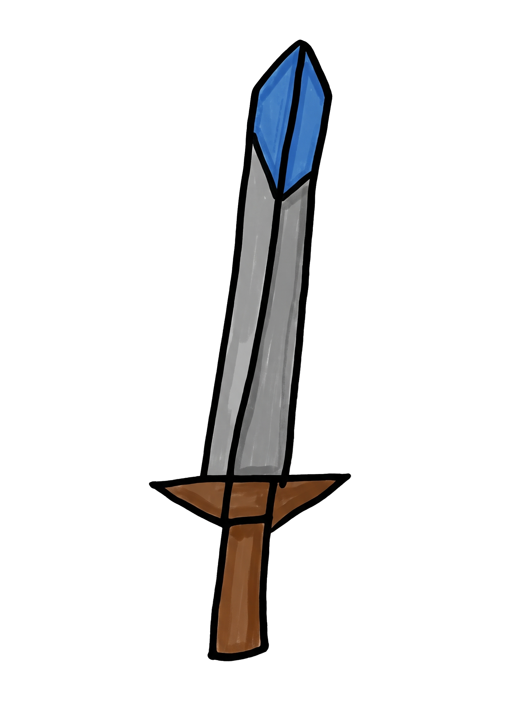
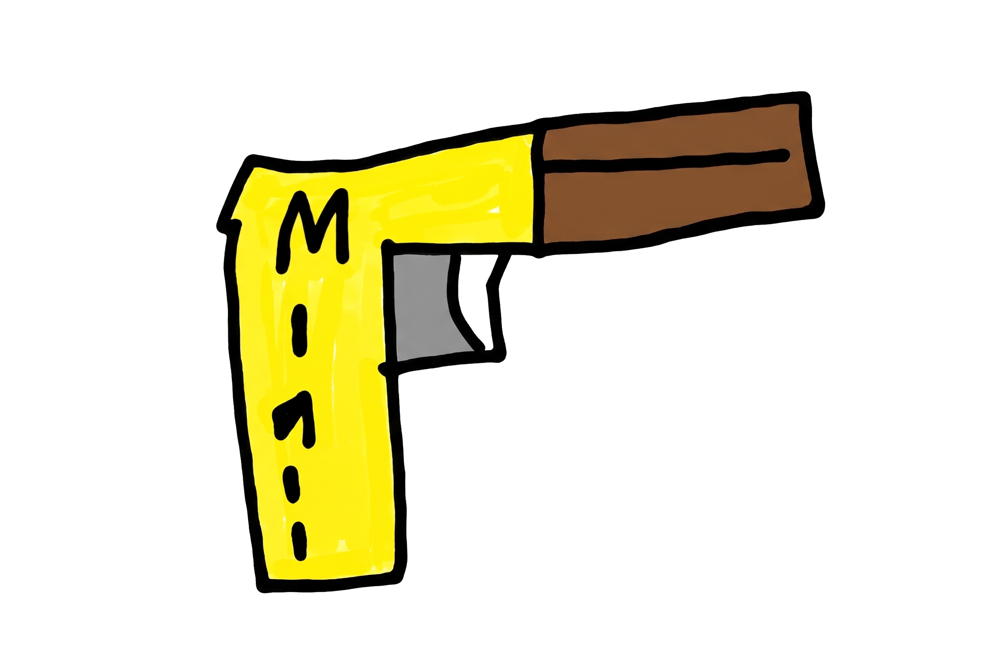
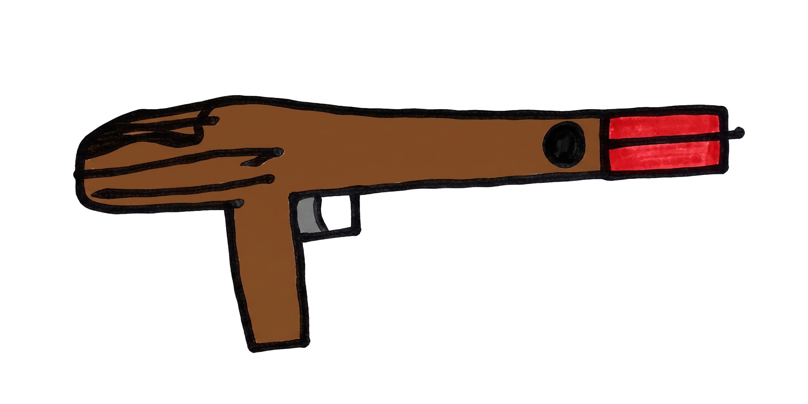
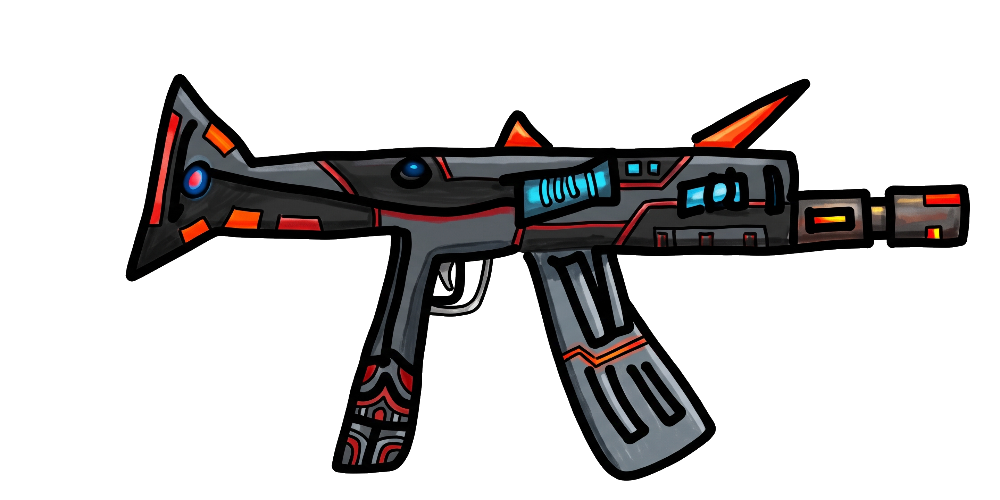
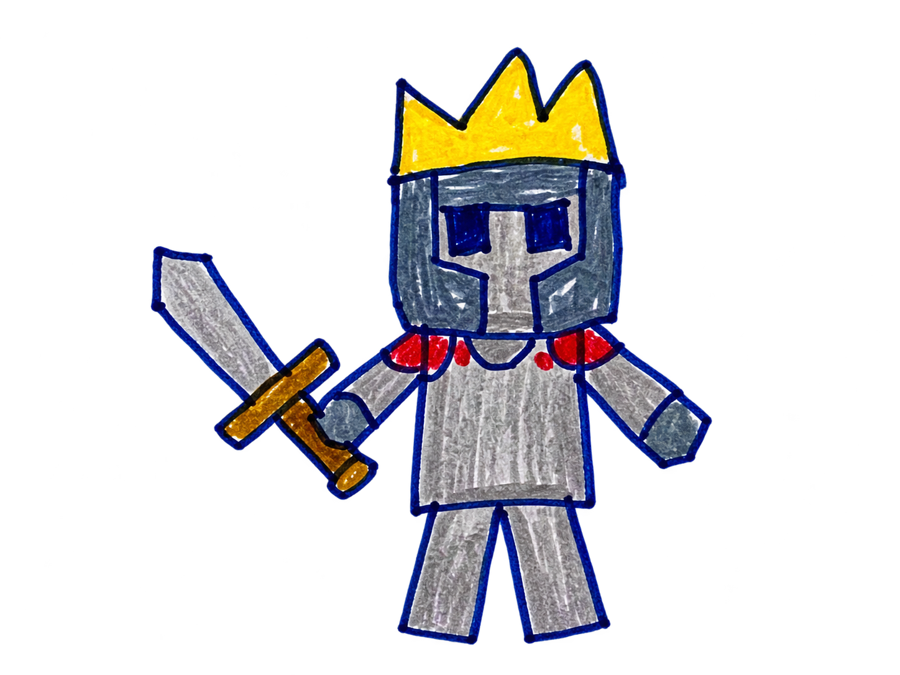
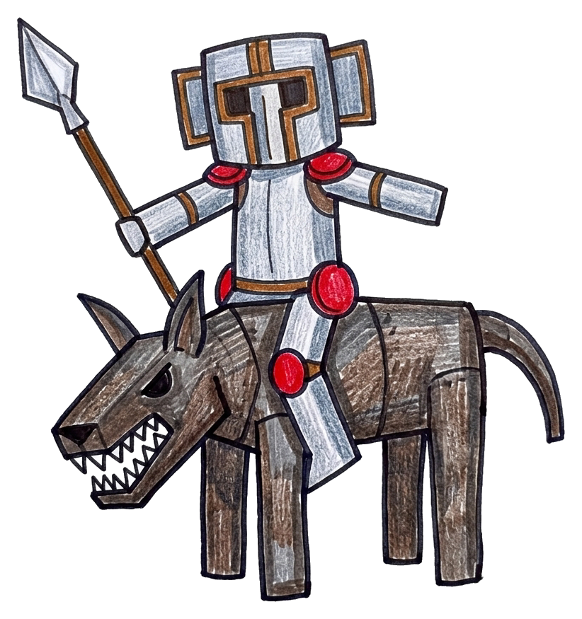
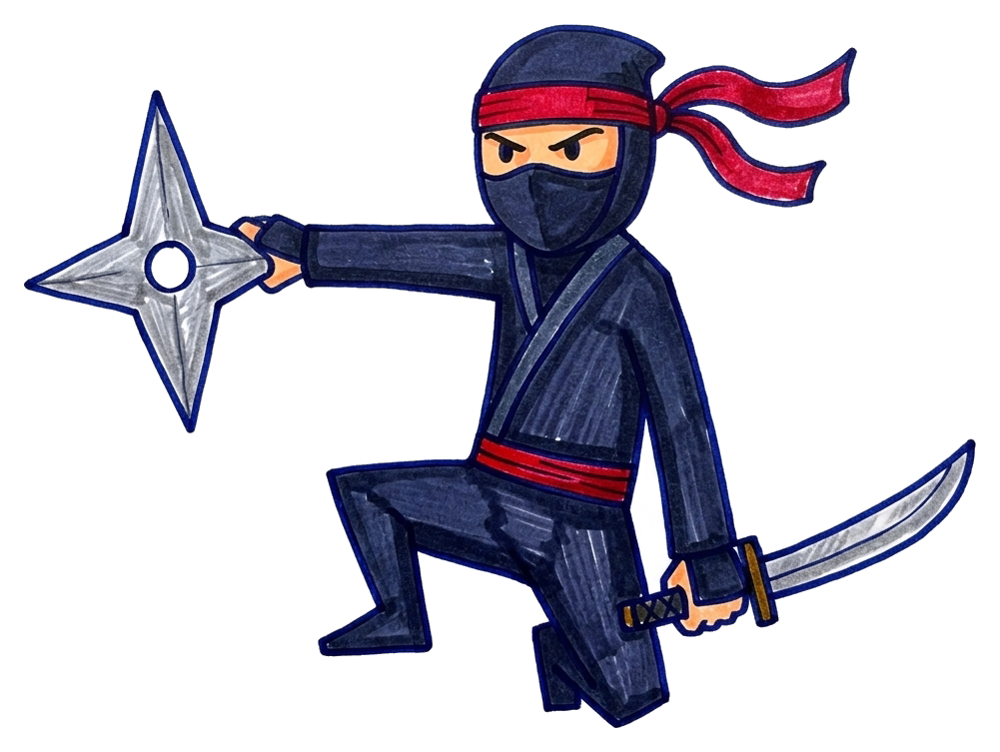

《蛋仔守城》完整遊戲規則與關卡平衡設計書
整合現有 8 把武器 與 10 種怪物 素材，針對「武器攻速與 DPS」、「怪物血量、移速與破城傷害」、「過關金幣經濟曲線」與「單關遊戲時長」進行全方位數值重構。
1. 遊戲設計師評估：為什麼原版規則需要重構？可以設計幾關？
根據目前 `weapons.json`（8 把武器）與 `monsters.json`（10 種怪物）的原始數據，我們發現三個關鍵數值斷層，並據此提出最佳關卡結構。
🔍 原始數值的三大斷層診斷
- 斷層 1：後期怪物血量 vs 武器攻速不匹配
原版所有槍械冷卻皆為 `0.5 秒`。最高階的 M134 火神機槍（傷害 25） 每秒僅能造成 50 點傷害，面對 刀之首領（1,000 HP） 需連續射擊 20 秒，但怪物 13 秒就進城門，導致後期在數學上「不可能守住」。
👉 解法：依武器類型差異化「攻擊間隔」（如 AK-47 設為 `0.22s`、M134 設為 `0.14s`），同時 explains 為何 AK-47 單發傷害(15)低於 GL06(20)卻貴上 $600。 - 斷層 2：怪物「攻擊力」欄位尚未發揮作用
`monsters.json` 為 10 種怪物設定了 `10 ~ 175` 的攻擊力，以及魔法師的三種法術傷害，但原版只要「1 隻怪物碰門即失敗」。
👉 解法：導入「城門耐久度（Castle HP = 200）」，怪物抵達城門時扣除對應攻擊力的城門血量，漏掉小怪有容錯、漏掉死神/首領則直接重創！ - 斷層 3：後期怪物金幣暴增 vs 武器價格上限
全部 7 把商店武器總價為 `$5,350`（最貴 M134 為 `$2,000`），但中後期單隻怪物獎勵高達 `$200 ~ $800`。
👉 解法：每關結束皆開放商店，並新增「戰地武器強化（Lv.1~Lv.3）」或調整高階武器售價，讓後段金幣依然有迫切用途。
🎯 關卡數量評估：推薦「8 關主線戰役」（或 10 關擴充版）
- 為什麼「8 關制」是黃金配置？
- 完美對齊 8 把武器節奏：遊戲共有 8 把武器（初始拳頭 + 7 把商店武器）。8 個關卡剛好讓玩家在每一關都有「明確的下一把目標武器」可買，不會出現連續兩關沒新武器可用的空窗期。
- 10 種怪物分層登場不拖泥帶水：前 4 關每關引入 1~2 種新怪物建立機制認知；第 5~6 關混合中階精英（魔法師、惡魔靈、死神）；第 7 關由「手槍兵 + AI-Gemini」擔任副首領關；第 8 關由「刀之首領」壓軸登場。
- 若想做成「10 關制」怎麼排？
下方第 5 節除了完整列出 8 關標準配置 外，也一併附上 第 9、10 關（10 關完整一怪一關版） 的獨立拆分配置，開發時可自由選擇 8 關或 10 關！
2. 第二版（V2）核心遊戲規則
保留第一版直覺好上手的橫向移動與射擊操作，升級城門攻防、商店開放時機與戰術選擇。
🏰 城門耐久度與勝負規則
- 城門基礎血量（Castle HP）：每關開始時城門擁有 200 HP（畫面左上角新增城門血條）。
- 怪物破城傷害：怪物突破防線抵達左側城門（`x <= 220`）時，會對城門造成該怪物的 攻擊力（Attack） 傷害並消失，同時觸發畫面震動與紅光警示。
- 未擊殺不給錢原則：撞擊城門自爆的怪物不會給予玩家金幣！想買神裝就必須親手擊斃怪物。
- 過關條件：場上與待生成佇列的怪物全數清空，且城門 HP > 0。
- 完美守城獎勵：若過關時城門維持 200 / 200 HP（無傷過關），額外獲得本關金幣 +10% 完美守城獎金。
- 失敗與重試：城門 HP 歸零立即判定失敗；點擊「重新挑戰」會回滾至該關開始前的金幣與武器狀態。
🛒 商店、武器切換與金幣規則
- 每關過關後皆開放商店：取消第一版「只開一次商店」的限制，改為每一關過關後都進入商店畫面，方便玩家循序漸進採購裝備。
- 戰前選武 ＋ 戰場副武器切換（可選進階規則）：
- 基礎規則：每關開戰前從已擁有武器挑選 1 把出戰。
- 建議升級：允許玩家在戰前勾選 最多 2 把已擁有武器（主武器 + 副武器），戰鬥中按 `Q` / `Shift` 或點擊 HUD 武器圖示即可瞬間切換（例如：拿 AK-47 點殺忍者、切 GL06 轟炸殭屍群）。
- 後期金幣消耗池（武器專精強化）：當玩家在中後期金幣充裕時，可在商店花費金幣將已擁有的武器升至 ★2（傷害 +25%，費用為原價 80%） 與 ★3（傷害 +50%，費用為原價 150%）。
3. 武器系統完整數值表（含攻擊間隔與 DPS 平衡）
完全保留 `weapons.json` 的原始售價與單發攻擊力，透過精準調校「攻擊間隔（冷卻時間）」與「判定範圍」，讓每把武器都有鮮明的手感與戰術價值。
| 編號 | 武器名稱 | 類型 | 商店價格 | 單發攻擊力 | 攻擊間隔 (冷卻) | 單目標 DPS | 射程 / 判定範圍 | 戰術定位與特殊效果 |
|---|---|---|---|---|---|---|---|---|
| 0 |
✊
拳頭
初始配備 |
近戰群攻 | 免費 ($0) | 7 | 0.50 秒 | 14.0 / 秒 | 前方 170 px 垂直寬度 ±105 px |
第 1 關教學武器，3 拳可擊倒方塊殭屍(20 HP)，貼身揮擊可同時打中多隻重疊殭屍。 |
| 1 |

鐮刀
Scythe |
近戰群攻 | $50 | 8 | 0.45 秒 | 17.8 / 秒 | 前方 220 px 垂直寬度 ±120 px |
價格極親民的早期過度武器，揮砍範圍與攻速皆優於拳頭，適合第 2 關清理殭屍群。 |
| 2 |
 長刀
Longsword |
近戰群攻 | $100 | 9 | 0.38 秒 | 23.7 / 秒 | 前方 255 px 垂直寬度 ±125 px |
最強近戰武器，攻速快、距離長，3 刀即可斬殺殭屍、7 刀斬殺冠帽小戰士(60 HP)。 |
| 3 |

弓
Bow |
遠程穿透 | $250 | 8 | 0.40 秒 | 20.0 / 秒 | 全畫面直線 彈道寬度 ±58 px |
第一把遠程武器！怪物一出場即可在遠端直線貫穿射擊，大幅降低貼身攔截的走位壓力。 |
| 4 |
 M1911
半自動手槍 |
遠程穿透 | $550 | 10 | 0.30 秒 | 33.3 / 秒 | 全畫面直線 彈道寬度 ±62 px |
單發剛好 10 點傷害（2 槍秒殺殭屍、6 槍秒殺小戰士、10 槍解決裝甲騎兵），手感極佳的中期主力。 |
| 5 |
 GL06
榴彈發射器 |
遠程範圍爆破 | $900 | 20 | 1.00 秒 (原 1.5s 調快) |
20.0 單體 (群傷極高) |
直線 + 爆炸半徑 190 px 附帶短暫震退 |
規則升級：一發 20 傷害直接秒殺滿血殭屍！命中目標時產生大範圍圓形爆炸並造成 0.35 秒減速，專克密集怪潮。 |
| 6 |
 AK-47
突擊步槍 |
全自動穿透 | $1,500 | 15 | 0.22 秒 (原 0.5s 改連發) |
68.2 / 秒 | 全畫面直線 彈道寬度 ±65 px |
高速連射步槍：每秒射出 4.5 發穿透彈，3 秒內可融化惡魔靈(250 HP)、4.4 秒擊殺死神(300 HP)。 |
| 7 |

M134
六管火神機槍 |
終極彈幕穿透 | $2,000 | 25 | 0.14 秒 (原 0.5s 改極速) |
178.6 / 秒 | 全畫面寬幅直線 彈道寬度 ±78 px |
終極破王神武：每秒傾瀉 7 發重型機槍彈，4.2 秒擊毀 AI-Gemini(750 HP)、5.6 秒擊破刀之首領(1000 HP)。 |
4. 怪物圖鑑與數值表（含移動速度與登場關卡設計）
依據 10 種怪物的造型與背景設定，打破原版「全怪物固定 13 秒走完」的單調感，區分出突擊快怪、標準步兵、遠程法師、重裝巨型首領四種移動速度梯隊。
| ID | 怪物名稱與造型 | 定位分類 | HP (血量) | 破城攻擊力 | 擊敗金幣 | 走完全程時間 | 移動速度 | 初次登場與特殊行為機制 |
|---|---|---|---|---|---|---|---|---|
monster_01 |

方塊殭屍
Square Zombie |
基礎雜兵 | 20 | 10 | $10 | 13.5 秒 | ~96 px/s | 第 1 關登場：直線朝城門緩步前進，數量龐大但血量低，用於熟悉走位與群攻。 |
monster_02 |
 冠帽小戰士
Little Knight |
前鋒步兵 | 60 | 20 | $50 | 12.5 秒 | ~104 px/s | 第 2 關登場：血量為殭屍的 3 倍，步伐稍快，帶領殭屍群推進的小隊長。 |
monster_03 |
 裝甲騎兵
Armored Cavalry |
高速突擊 | 100 | 25 | $80 | 10.0 秒 | ~130 px/s | 第 3 關登場：騎乘裝甲猛獸，移動速度比殭屍快 35%！玩家需優先攔截避免衝破防線。 |
monster_04 |
 忍者
Ninja |
極速刺客 | 150 | 35 | $120 | 9.0 秒 | ~145 px/s | 第 4 關登場：全遊戲移動最快的敏捷單位（9 秒即達城門），行進時帶有輕微上下波浪閃避軌跡。 |
monster_05 |

魔法師
Mage |
遠程施法 | 195 | 40 (30 / 40 / 45) |
$160 | 15.0 秒 | ~87 px/s | 第 5 關登場：移動較慢，但推進至場中央（`x <= 650`）若未死亡，會詠唱 1 次隨機法術（隕石 30 / 魔法球 40 / 閃電 45）遠距轟擊城門！ |
monster_06 |

惡魔靈
Demon Spirit |
靈體中堅 | 250 | 50 | $200 | 11.5 秒 | ~113 px/s | 第 5 關登場：飄浮前進的魔眼幽靈，血量厚且速度不慢，常成對出現掩護魔法師。 |
monster_07 |
死神
Grim Reaper |
高傷精英 | 300 | 75 | $250 | 12.5 秒 | ~104 px/s | 第 6 關登場：手持巨型鐮刀的死神，單次破城傷害高達 75（漏掉 3 隻即直接破城）。 |
monster_08 |

手槍兵
Pistol Soldier |
重裝精英 | 500 | 125 | $400 | 15.5 秒 | ~84 px/s | 第 7 關登場：500 HP 的重裝骷髏光環槍兵，檢驗玩家是否已裝備 AK-47 等高連射武器。 |
monster_09 |

AI-Gemini
科技機甲副首領 |
副首領 (Sub-Boss) | 750 | 150 | $600 | 18.0 秒 | ~72 px/s | 第 7 關壓軸登場：750 HP 高科技機甲，步伐沉重但破城傷害高達 150，城門若已受損被碰即敗。 |
monster_10 |

刀之首領
Blade Boss |
終極魔王 (Final Boss) | 1,000 | 175 | $800 | 21.0 秒 | ~62 px/s | 第 8 關最終魔王：高達 1,000 HP 與 175 破城傷害，體型最大，需以 M134 持續集火並同時清理護衛怪才能擊敗。 |
5. 全 8 關主線戰役：詳細關卡配置、遊戲時間與金幣購買路線圖
每一關皆經過精算：確保玩家使用「上一關商店可買到的推薦武器」時，擁有恰到好處的緊張感與成就感。
初陣・草地上的方塊屍潮
👾 怪物陣容與配置
純方塊殭屍教學關，總血量 360 HP。
⚔️ 出戰武器與過關後商店
本關出戰：✊ 拳頭（免費，DPS 14）
過關持有：$180（含完美獎勵可達 $198）
過關可買：鐮刀 ($50) 或 長刀 ($100)
💡 設計師節奏說明
刻意將第一關金幣控制在 $180，讓玩家在第一關結束時剛好能買近戰武器「鐮刀($50)」或「長刀($100)」，解決原版直接跳過近戰武器去買弓的問題。
皇冠小隊長的進擊
👾 怪物陣容與配置
總血量 600 HP，小戰士穿插在屍潮中登場。
⚔️ 出戰武器與過關後商店
推薦出戰：🗡️ 長刀（DPS 23.7）或 鐮刀
過關持有：約 $460 ~ $560
過關可買：弓 ($250)（若第 1 關省錢不買近戰，更可直上 M1911 $550！）
💡 設計師節奏說明
創造第一個策略抉擇點：第 1 關買長刀可輕鬆砍過第 2 關並買「弓」；若第 1 關堅持用拳頭硬打過第 2 關，就能存夠 $560 直接買「M1911 手槍」！
鐵蹄奔襲・裝甲騎兵突擊
👾 怪物陣容與配置
總血量 1,080 HP，裝甲騎兵 10 秒即衝達城門。
⚔️ 出戰武器與過關後商店
推薦出戰：🏹 弓（DPS 20）或 🔫 M1911
過關持有：約 $900 ~ $1,000
過關可買：M1911 ($550) 或 GL06 榴彈槍 ($900)
💡 設計師節奏說明
裝甲騎兵速度快（10 秒到門），近戰武器必須頻繁追怪，而遠程穿透武器（弓／手槍）能從騎兵一出場就開始削減血量，體現遠程武器的價值。
疾風暗影・忍者的奇襲
👾 怪物陣容與配置
總血量 1,750 HP，忍者僅需 9 秒即可衝進城門！
⚔️ 出戰武器與過關後商店
推薦出戰：🔫 M1911（DPS 33.3）或 💥 GL06
過關持有：約 $1,500 ~ $1,800
過關可買：GL06 ($900) 或直上 AK-47 ($1,500)
💡 設計師節奏說明
高速關卡！騎兵與忍者交替衝鋒，M1911 精準連射只需 4.5 秒即可擊殺忍者，過關後存下的金幣剛好夠解鎖中後期核心神槍 AK-47 ($1,500)。
秘法與魔眼・雙重威脅
👾 怪物陣容與配置
總血量 3,360 HP，魔法師與惡魔靈聯手登場。
⚔️ 出戰武器與過關後商店
推薦出戰：🔥 AK-47（DPS 68.2）＋ 💥 GL06
過關持有：約 $2,000+
過關可買：解鎖終極武器 M134 火神機槍 ($2,000) 或補齊副武器
💡 設計師節奏說明
魔法師走到場中會詠唱魔法遠距轟擊城門，因此玩家必須用穿透武器越過前排戰士/惡魔靈，優先集火後排的魔法師！
冥界收割・死神降臨
👾 怪物陣容與配置
總血量 5,030 HP，死神破城傷害高達 75 點。
⚔️ 出戰武器與過關後商店
推薦出戰：🔥 AK-47 或 ⚡ M134 火神機槍
過關可買：購買 M134 ($2,000)，並可將主力武器升至 ★2 強化（傷害 +25%）
💡 設計師節奏說明
進入高壓精英戰！5 隻死神（300 HP）混在惡魔靈與忍者之中，若還拿中階手槍會出現火力缺口，必須依靠 AK-47 或 M134 的直線貫穿彈幕掃蕩。
鋼鐵與硝煙・AI-Gemini 覺醒（副首領關）
👾 怪物陣容與配置
總血量 7,880 HP，中場與關底各出現 1 尊 AI-Gemini 機甲。
⚔️ 出戰武器與過關後商店
推薦出戰：⚡ M134 火神機槍（DPS 178.6）
過關可買：將 M134 或 AK-47 升至 ★3 滿級強化，為最終決戰做準備
💡 設計師節奏說明
手槍兵（500 HP）作為前排肉盾掩護後方的忍者與法師，第 12 隻與第 25 隻固定刷出副首領 AI-Gemini (750 HP)，營造強烈的雙波次高潮！
王座的終極試煉・刀之首領降臨
👾 怪物陣容與配置
總血量 9,750 HP！中場 1 隻刀之首領，關底「AI-Gemini + 刀之首領」同時壓境！
⚔️ 出戰武器配置
終極配置：⚡ M134 火神機槍（主武）＋ 💥 GL06 榴彈（副武控場）
通關獎勵：解鎖「傳奇蛋仔守城指揮官」通關結算畫面與總評分！
💡 設計師節奏說明
最終關卡考驗玩家的目標優先級：刀之首領雖然有 1,000 HP 且一刀扣城門 175 血，但走完全程需 21 秒；玩家必須一邊對準首領所在水平線瘋狂傾瀉 M134 穿透彈幕，一邊攔截其他路線偷跑的 9 秒忍者！
若希望 10 種怪物每一關剛好解鎖 1 種新怪物，只需將上述第 5～8 關拆分為 6 個關卡即可：
- 第 1 ~ 4 關：與上方相同（依序解鎖：1.方塊殭屍 → 2.冠帽小戰士 → 3.裝甲騎兵 → 4.忍者）。
- 第 5 關（魔法師專場）：小戰士×8 + 騎兵×6 + 忍者×5 + 魔法師×5（共 24 隻，生怪間隔 1.8s）。
- 第 6 關（惡魔靈專場）：騎兵×5 + 忍者×6 + 魔法師×4 + 惡魔靈×6（共 21 隻，生怪間隔 1.75s）。
- 第 7 關（死神專場）：忍者×6 + 魔法師×4 + 惡魔靈×5 + 死神×6（共 21 隻，生怪間隔 1.7s）。
- 第 8 關（手槍兵專場）：惡魔靈×6 + 死神×6 + 手槍兵×6（共 18 隻，生怪間隔 1.65s）。
- 第 9 關（AI-Gemini 專場）：忍者×6 + 死神×5 + 手槍兵×5 + AI-Gemini×3（共 19 隻，生怪間隔 1.6s）。
- 第 10 關（刀之首領最終決戰）：騎兵×5 + 忍者×5 + 死神×5 + 手槍兵×5 + AI-Gemini×2 + 刀之首領×2（共 24 隻，生怪間隔 1.55s）。
6. 八關卡全局曲線總表（DPS 需求 vs 金幣經濟）
以下表格展示第 1 關至第 8 關的難度成長曲線，確保「關卡需求每秒傷害」與「玩家當下持有武器的每秒傷害」完美契合。
| 關卡 | 新登場怪物 | 怪物總數 | 生怪間隔 | 關卡總 HP | 預估關卡時長 | 過關最低平均 DPS | 推薦使用武器 (單目標 DPS) | 本關可得金幣 | 過關累積總金幣 |
|---|---|---|---|---|---|---|---|---|---|
| 第 1 關 | 方塊殭屍 | 18 隻 | 2.40 秒 | 360 | ~50 秒 | 7.2 / 秒 | 拳頭 (14.0 DPS) | $180 | $180 |
| 第 2 關 | 冠帽小戰士 | 22 隻 | 2.10 秒 | 600 | ~55 秒 | 10.9 / 秒 | 鐮刀 (17.8) / 長刀 (23.7) | $380 | $560 |
| 第 3 關 | 裝甲騎兵 | 24 隻 | 1.90 秒 | 1,080 | ~55 秒 | 19.6 / 秒 | 弓 (20.0 穿透) / M1911 (33.3) | $690 | $1,250 |
| 第 4 關 | 忍者 | 25 隻 | 1.80 秒 | 1,750 | ~55 秒 | 31.8 / 秒 | M1911 (33.3) / GL06 (範圍爆破) | $1,160 | $2,410 |
| 第 5 關 | 魔法師、惡魔靈 | 26 隻 | 1.75 秒 | 3,360 | ~60 秒 | 56.0 / 秒 | AK-47 (68.2 穿透) | $1,990 | $4,400 |
| 第 6 關 | 死神 | 26 隻 | 1.70 秒 | 5,030 | ~60 秒 | 83.8 / 秒 | AK-47 (穿透群傷) / M134 (178.6) | $2,950 | $7,350 |
| 第 7 關 | 手槍兵、AI-Gemini | 25 隻 | 1.65 秒 | 7,880 | ~65 秒 | 121.2 / 秒 | M134 火神機槍 (178.6 穿透) | $4,590 | $11,940 |
| 第 8 關 | 刀之首領 | 28 隻 | 1.60 秒 | 9,750 | ~75 秒 | 130.0 / 秒 | M134 ★強化 + GL06 副武 | $5,700 | $17,640 |